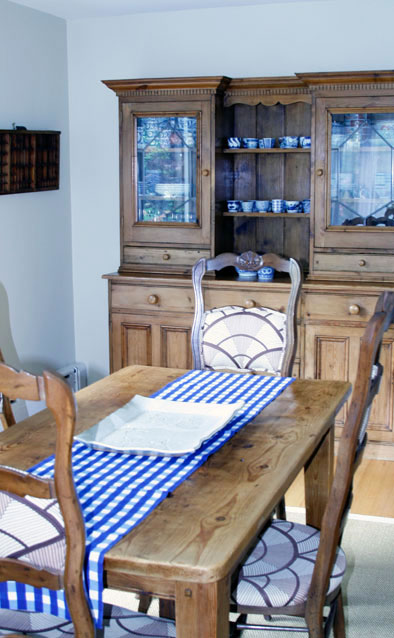
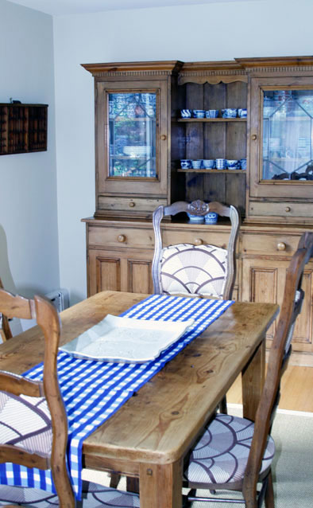

patrizia
 

I
was born and raised in Geneva, Switzerland. My parents are Italian and at home we always used linen that belong to my mom's family. They were soft but strongly woven pure linen. Ever since I moved out from my parents' place I have been looking for such linen wherever I lived: London, Japan and finally in New York. I finally found them in Tricia's products, which are amazing and excellent quality. The first night I slept in my orkney sheets I felt I was back home. I love their scent, touch, and feel. It is such a comforting feeling to sleep in them. Thank you Tricia for bringing back good quality and to pay attention to all the details from the mill to the final product! I would like to share with you on the things I love in my home: my old pine furniture from UK, my Japanese antiques, my ceramics and now — my linen!